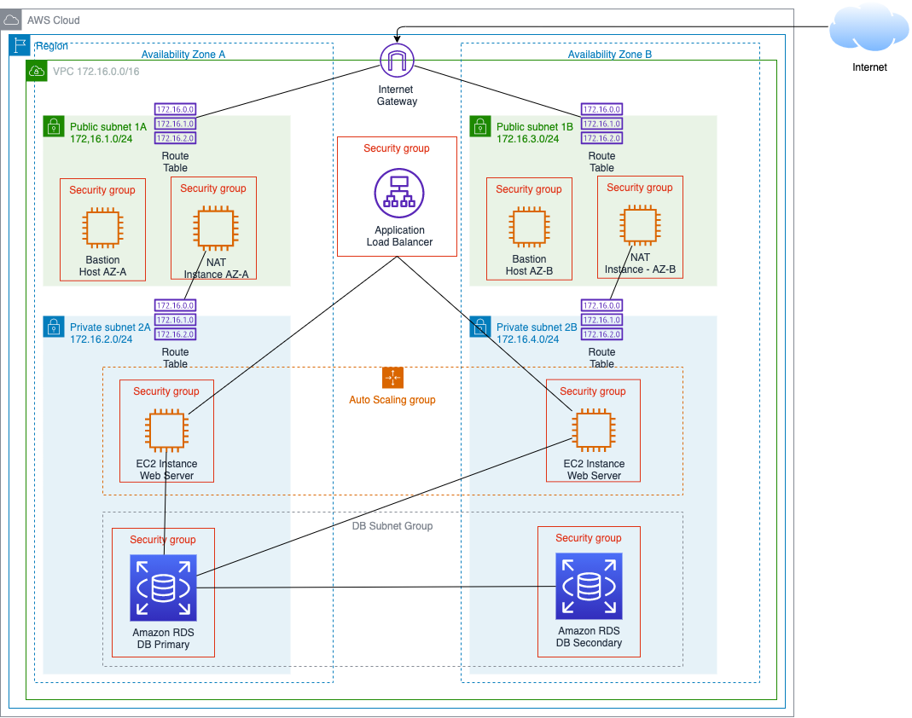

Trabajo Final Telemática
Por: Daniel Olarte
Profesor: Edwin Montoya
Mayo 24, 2021
Tabla de Contenido
INTRODUCCIÓN 3
Definición de Equipo 3
Github Oficial 3
Requisitos No Funcionales 3
Disponibilidad 3
Rendimiento 3
Seguridad 4
Diseño 4
Arquitectura 4
Diseño para la Escalabilidad 5
Proceso de Instalación 5
INTRODUCCIÓN
El punto del trabajo es desplegar una aplicación open source LAMP de comunidad que represente un sistema de información del tipo Sistema de Gestión de Contenidos (CMS, por sus siglas en inglés). En este caso se seleccionará wordpress.
Definición de Equipo
Daniel Olarte Blasche (Estudiante unico con todos los roles)
Telefono: 317 427 1337
C.C. 1.017.198.828
E-Mail: dolarte@eafit.edu.co
Github Oficial
Link:
https://github.com/Arthwin/TelematicaP2
Requisitos No Funcionales
Los siguientes requisitos no funcionales son requeridos en la aplicación.
Disponibilidad
- Balanceadores de carga
- Crecimiento horizontal
- Disponibilidad en la capa de servicios
- Disponibilidad en la capa de persistencia de datos para el manejo de archivos.
- Disponibilidad en la capa de bases de datos para el manejo de la información almacenada en el motor definido para esto.
- Sistema de backup y restore de datos, contenidos, aplicaciones, etc. (Servicios administrados de Amazon)
Rendimiento
- Tiempos de respuesta promedio entre 1 y 2 segundos
- Performance tuning de la Aplicación, de la Base de datos, de los servicios del sistema.
- Diseño e implementación de CDN (content distribution network)
Seguridad
- Política de gestión de claves de usuario
Diseño
- Diseñar el sistema para 20.000 usuarios, con un nivel de concurrencia del 10%.
- Diseñar el sistema para un almacenamiento total de 20GB.
- Se requiere que los clientes se conecten por diferentes ISP distribuidos por un mismo país (80% del tráfico) y fuera del país (20%), cada usuario estará conectado por una conexión de banda ancha de mínimo 20 Mbps.
Arquitectura

Diseño para la Escalabilidad
Patrones de arquitectura
- Mejores prácticas
- Eliminar puntos únicos de falla: Agregar redundancia de los sistemas.
- Balanceadores de cargas (Capa de servicio)
- Sistema de Failover: Un sistema automático de failover donde automáticamente se pueda cambiar de maestro.
- DB Clusters
- Detección de Fallas: Mecanismos de monitoreo, CD y CI.
- Redundancia Geográfica
- Sistemas de archivos distribuidos.
- Teorema CAP (Consistencia y Disponibilidad, ignorando particionamiento.)
- Selección de tácticas
- Escalamiento Horizontal
- Pros:
- Escalar cuesta menos.
- Reduce el estrés y elimina cuellos de botella
- Más resistente a fallas
- Cons:
- Las conexiones horizontales y comunicación cross-server se pueden complicar a grandes escalas.
- Menos consistencia por cuestiones inherentes de la redundancia.
- No se puede segregar servicios a un solo servidor que requiere más capacidad.
Definición de Herramientas a utilizar
- Amazon Web Services
- EC2
- EFS
- IAM
- VPC
- RDS
- Wordpress
- Cloudshare
Proceso de Instalación
Proceso de desarrollo e instalación desarrollado por el docente Edwin Montoya de la universidad EAFIT, link:
https://drive.google.com/file/d/1SSJYaouGtxkGtn4rL3IMyGCbJQuWf0IZ/view?usp=sharing